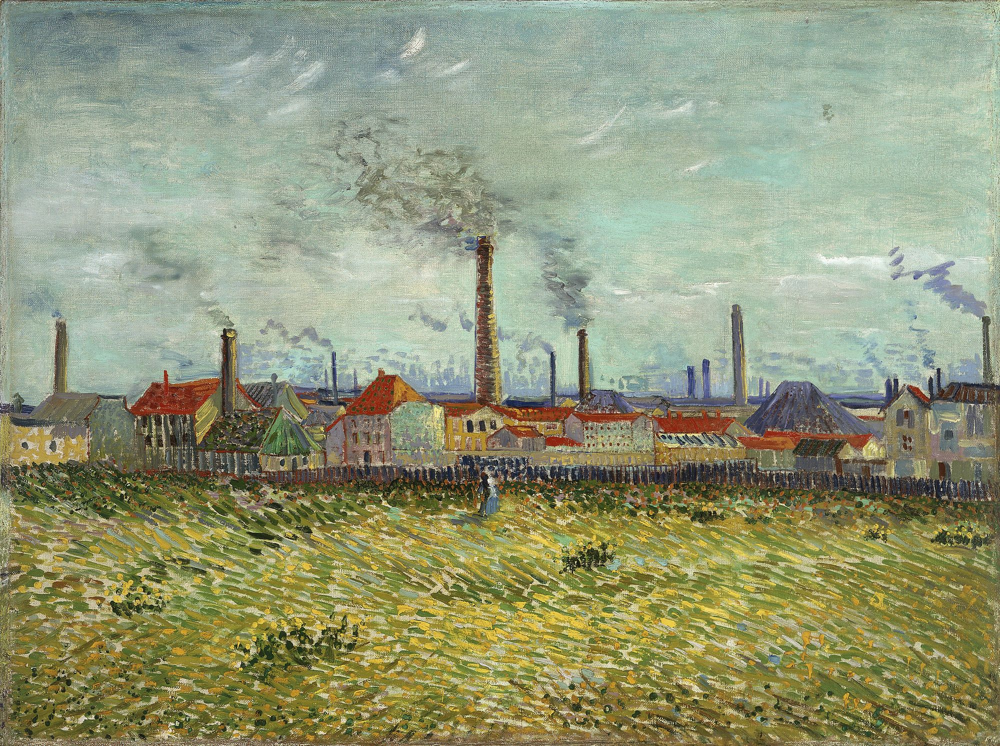

See the details Vincent van Gogh, Factories at Asnières, 1887- 10–12 weeks
- Full-time, mentored research
- 15–20
- Fellows in the first cohort
- All stages
- Undergrad to postdoc
- Funded
- Stipend, housing, travel, and research support
The social sciences emerged to make sense of the Industrial Revolution, but only after the fact. AI is reshaping work, institutions, and social life on a much faster timeline. Society needs people studying AI’s effects now, while there is still time to shape the transition.
Why SIRA
Social scientists are one of the most underused sources of talent in AI safety, and right now there is no clear way for them to get into the field. The full proposal on LessWrong makes the case in detail.
No structured path in
Few advisors in the social sciences know AI safety well. Existing fellowships are mostly split into technical and policy tracks, and social scientists usually get placed in policy. SIRA pairs them with mentors who already work where the social sciences and AI safety meet.
Underused expertise
Behavioral economics, moral psychology, and organizational sociology are rarely applied directly to AI safety questions. Fellows work through scoped projects that put these methods to use.
No signal of readiness
Academic credentials don’t show AI safety competence. Fellows leave with a finished research project and a public presentation, both of which hiring organizations can evaluate.
Who should apply
Social scientists who care about AI safety and want to do rigorous empirical work on it.
We are looking for researchers at any career stage, from undergraduates to postdocs, who study how people and institutions reason about AI, trust it, use it, and are changed by it. Our focus is psychology, economics, and sociology, and we welcome researchers from communication, anthropology, cognitive science, and linguistics.
SIRA is about empirical social science (experiments, surveys, interviews, ethnography, and quantitative modeling), not regulatory policy design. Policy asks “what rules should govern this?” We ask “what is actually happening?”
The program
Mentors are confirmed first. Fellows then apply and are matched in one of two ways.
Project track
Apply to a defined project
Mentors offer specific, scoped projects that fellows apply to directly. This suits fellows who benefit from a clear starting point, such as undergraduates.
Direction track
Bring your own question
Mentors offer a general research direction, and fellows are matched by fit. This suits PhD students and postdocs who arrive with research interests of their own.
We offer
- Mentorship from researchers in academia and industry who work on AI safety from a social science angle.
- Research management. A dedicated research manager helps you scope a project you can finish in the program and keeps you on track.
- Seminars and speakers covering both technical AI safety and the social sciences, so you get context beyond your mentor’s specialty.
- An in-person cohort. Working alongside other fellows every day is a large part of what makes short programs like this work.
- Financial support. A stipend, housing, travel, and research funds, so cost isn’t a barrier to taking part.
- A closing symposium where you present your work to mentors and the wider AI safety community.
Example research questions
These illustrate the kind of work fellows might take on. The questions are relevant whether transformative AI arrives soon or later.
- PsychologyAs AI becomes the default aid for everyday judgment, how does that shift human epistemic autonomy and vulnerability to manipulation?
- EconomicsWhat incentive structures drive frontier labs to underinvest in safety under racing dynamics, and which near-term market interventions could shift them?
- SociologyDrawing on the sociology of organizational disaster, how do AI labs normalize risk over time, and which interventions reduce that tendency?
- CommunicationHow do AI-generated content and persuasion degrade the information ecosystem in ways that weaken society’s ability to coordinate a response to AI risk?
- Political economyHow does near-term labor disruption from AI affect public and political support for AI safety regulation?
- PsychologyOver generations, how does handing cognitive and moral judgment to AI affect human agency and our capacity to oversee increasingly capable systems?
Timeline
SIRA is currently a proposal. Here is how we plan to get to a first cohort.
- Now
Feedback and interest
Gather feedback from the AI safety community and gauge interest from prospective fellows and mentors.
- Next
Partners and funding
Secure a host fellowship or co-working space, confirm mentors, and raise program funding.
- Summer 2027
First cohort
Applications open once mentors are confirmed. The first cohort of 15–20 fellows runs for 10–12 weeks.
Get involved
We are looking for four kinds of collaborators. Fellows and mentors can fill out a short interest form. Host organizations and funders, please email us at contact@sirafellowship.org.
Mentors
Researchers working where the social sciences meet AI safety, in academia or industry.
Offer to mentor →Host organizations
Fellowships or co-working spaces that could host SIRA as a research stream or standalone program.
Email us →FAQ
Is SIRA running yet?
Not yet. SIRA is a proposal, and we are currently gathering feedback, mentors, partners, and funding. We are targeting a first cohort in Summer 2027. You can read the full proposal and leave feedback in the comments.
Where will it take place?
We plan to run in person, either as a dedicated stream inside an existing AI safety fellowship or as a standalone program. Options include New York, Boston, San Francisco, London, and a remote or hybrid format.
What counts as social science here?
Empirical research on people and institutions, using established methods (experiments, surveys, interviews, ethnography, and quantitative modeling of behavior and institutions), applied to AI systems and their effects. It treats AI as part of larger social and technical systems. That makes it distinct from technical and mathematical alignment work on one side, and from legal and regulatory policy work on the other.
How is this different from a policy or governance fellowship?
SIRA is a social science fellowship, not a policy fellowship. Policy and governance research asks “what rules should govern this?”: it designs regulation, evaluates compliance, and advises decision-makers. Social science asks “what is actually happening?”: it studies how people and institutions reason about, trust, use, and are changed by AI in practice. The same topic can be approached either way:
- PolicyWhat disclosure rules should apply to AI-generated political messages?Social scienceHow much do AI-written messages actually shift people's views, and who is most persuadable?
- PolicyWho should be liable when AI advice causes harm?Social scienceWhen do people over-trust AI advice, and what makes them check it?
- PolicyHow should AI labs be required to report safety incidents?Social scienceHow do people inside AI labs decide what counts as an incident worth reporting?
There is a middle ground where the two meet, and social science findings often inform policy. But SIRA projects start from the social science question and an empirical method, not from a regulation to design. Many fellowships already support policy and governance research; very few support this.
Do I need a technical background?
No. Fellows come from the social sciences. Seminars and mentorship give you the AI safety context you need, and research managers help you scope a project you can finish within the program.
Will projects involve human participants?
Some will. Any project involving human participants will require IRB review.
Is it paid?
Yes. We plan to provide a living stipend, housing, travel to and from the host city, and research funds for compute, software, and data or survey access.